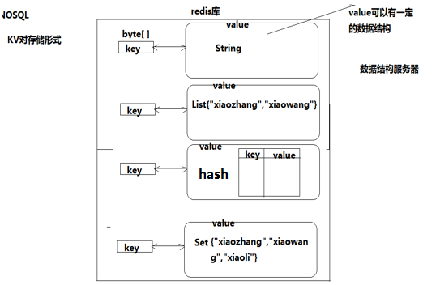
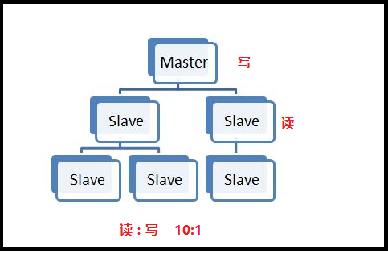
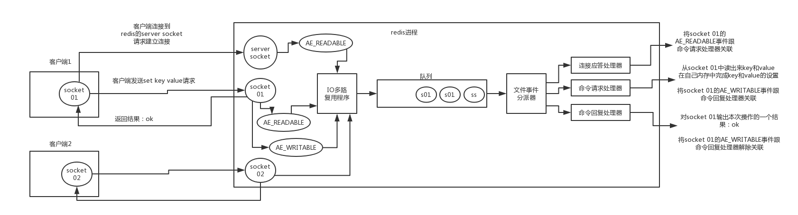

1.什么是Redis？¶
- Remote Dictionary Server(Redis)是一个开源的使用ANSI C语言编写、支持网络、可基于内存亦可持久化的日志型、Key-Value数据库，并提供多种语言的API。 它通常被称为数据结构服务器，因为值（value）可以是 字符串(String), 哈希(Map), 列表(list), 集合(sets) 和 有序集合(sorted sets)等类型。
2.Redis的特点什么是？¶
- 支持多种数据结构，如 string(字符串)、 list(双向链表)、dict(hash表)、set(集合)、zset(排序set)、hyperloglog(基数估算)
- 支持持久化操作，可以进行AOF及RDB数据持久化到磁盘，从而进行数据备份或数据恢复等操作，较好的防止数据丢失的手段。
- 支持通过Replication进行数据复制，通过master-slave机制，可以实时进行数据的同步复制，支持多级复制和增量复制，master-slave机制是Redis进行HA的重要手段。 单进程请求，所有命令串行执行，并发情况下不需要考虑数据一致性问题。
Redis 优势¶
- 性能极高 – Redis能读的速度是110000次/s,写的速度是81000次/s 。
- 丰富的数据类型 – Redis支持二进制案例的 Strings, Lists, Hashes, Sets 及 Ordered Sets 数据类型操作。
- 原子性 - Redis 的所有操作都是原子性的，意思就是要么成功执行要么失败完全不执行。单个操作是原子性的。多个操作也支持事务，即原子性，通过 MULTI 和 EXEC 指令包起来。
- 丰富的特性 – Redis还支持 publish/subscribe, 通知, key 过期等等特性。
Redis的应用场景¶
- 计数器 可以对 String 进行自增自减运算，从而实现计数器功能。 Redis 这种内存型数据库的读写性能非常高，很适合存储频繁读写的计数量。
- 缓存 将热点数据放到内存中，设置内存的最大使用量以及淘汰策略来保证缓存的命中率。
- 查找表 例如 DNS 记录就很适合使用 Redis 进行存储。 查找表和缓存类似，也是利用了 Redis 快速的查找特性。但是查找表的内容不能失效，而缓存的内容可以失效，因为缓存不作为可靠的数据来源。
- 消息队列 List 是一个双向链表，可以通过 lpush 和 rpop 写入和读取消息 不过最好使用 Kafka、RabbitMQ 等消息中间件。
- 会话缓存 可以使用 Redis 来统一存储多台应用服务器的会话信息。当应用服务器不再存储用户的会话信息，也就不再具有状态，一个用户可以请求任意一个应用服务器，从而更容易实现高可用性以及可伸缩性。
- 分布式锁实现 在分布式场景下，无法使用单机环境下的锁来对多个节点上的进程进行同步。 可以使用 Redis 自带的 SETNX 命令实现分布式锁，除此之外，还可以使用官方提供的 RedLock 分布式锁实现。
- 其它 Set 可以实现交集、并集等操作，从而实现共同好友等功能。 ZSet 可以实现有序性操作，从而实现排行榜等功能
3.Redis数据类型有哪些？¶
String(字符串) Hash(hash表) List(链表) Set(集合) SortedSet(有序集合zset)

键命令:¶
查找键，参数⽀持正则表达式
keys pattern
keys * #查看所有键 keys 'a*' #查看名称中包含a的键 exists key1 #判断键是否存在，如果存在返回1，不存在返回0 type key #查看键对应的value的类型 del key1 key2 .. # 删除键 #设置过期时间，以秒为单位 #如果没有指定过期时间则⼀直存在，直到使⽤DEL移除 expire key seconds ttl key #查看有效时间，以秒为单位
string类型(类似字典)¶
- 字符串类型是Redis中最为基础的数据存储类型，它在Redis中是二进制安全的，这便意味着该类型可以接受任何格式的数据，如JPEG图像数据或Json对象描述信息等。在Redis中字符串类型的Value最多可以容纳的数据长度是512M。
set key value #设置键值对 get key #获取值 mget key1 key2 #获取多个值
hash类型¶
- hash⽤于存储对象，对象的结构为属性、值(类似嵌套字典)
- 值的类型为string
hset key field value # 设置单个属性 # hset 键 属性 值 hmset key field1 value1 field2 value2 ... #设置多个属性 hkeys key #获取指定键所有的属性 hget key field #获取⼀个属性的值 hmget key field1 field2 ... #获取多个属性的值 hvals key #获取所有属性的值 del key #删除整个hash键及值，使⽤del命令 hdel key field1 field2 ... #删除属性，属性对应的值会被⼀起删除
list类型¶
- 列表的元素类型为string
- 按照插⼊顺序排序
lpush key value1 value2 ... # 在左侧插⼊数据 rpush key value1 value2 ... #在右侧插⼊数据 linsert key before或after 现有元素 新元素 #在指定元素的前或后插⼊新元素 ######################### 返回列表⾥指定范围内的元素 start、stop为元素的下标索引 索引从左侧开始，第⼀个元素为0 索引可以是负数，表示从尾部开始计数，如-1表示最后⼀个元素 lrange key start stop ##修改指定位置元素 索引从左侧开始，第⼀个元素为0 索引可以是负数，表示尾部开始计数，如-1表示最后⼀个元素 lset key index value ############## 删除指定元素 将列表中前count次出现的值为value的元素移除 count > 0: 从头往尾移除 count < 0: 从尾往头移除 count = 0: 移除所有 lrem key count value #从哪个表中移除几个(count不仅是次数也是方向)
set类型¶
- ⽆序集合
- 元素为string类型
- 元素具有唯⼀性，不重复
- 说明：对于集合没有修改操作
sadd key member1 member2 ... #添加元素 smembers key #返回所有的元素 srem key members #删除指定元素
zset类型¶
- sorted set，有序集合
- 元素为string类型
- 元素具有唯⼀性，不重复
- 每个元素都会关联⼀个double类型的score，表示权重，通过权重将元素从⼩到⼤排序
- 说明：没有修改操作
zadd key score1 member1 score2 member2 ... #添加 zadd 键 权重1 值1 权重2 值2 ######## 返回指定范围内的元素 start、stop为元素的下标索引 索引从左侧开始，第⼀个元素为0 索引可以是负数，表示从尾部开始计数，如-1表示最后⼀个元素 zrange key start stop #跟list的差不多嘛lrange key start stop zrangebyscore key min max #返回score值在min和max之间的成员 zrangebyscore a4 5 6 #获取键'a4'的集合中权限值在5和6之间的成员 zscore key member #返回成员member的score值 zrem key member1 member2 ... #删除指定元素 zremrangebyscore key min max #删除权重在指定范围的元素
持久化¶
Redis 是内存型数据库，为了保证数据在断电后不会丢失，需要将内存中的数据持久化到硬盘上。
- RDB：RDB 持久化机制，是对 redis 中的数据执行**周期性**的持久化。
- AOF：AOF 机制对每条写入命令作为日志，以
append-only的模式写入一个日志文件中，在 redis 重启的时候，可以通过**回放** AOF 日志中的写入指令来重新构建整个数据集。 - 如果同时使用 RDB 和 AOF 两种持久化机制，那么在 redis 重启的时候，会使用 AOF 来重新构建数据，因为 AOF 中的**数据更加完整**。
RDB 持久化
将某个时间点的所有数据都存放到硬盘上。
可以将快照复制到其他服务器从而创建具有相同数据的服务器副本。
如果系统发生故障，将会丢失最后一次创建快照之后的数据。
如果数据量大，保存快照的时间会很长。
AOF 持久化
将写命令添加到 AOF 文件（append only file）末尾。
使用 AOF 持久化需要设置同步选项，从而确保**写命令**同步到磁盘文件上的时机。这是因为对文件进行写入并不会马上将内容同步到磁盘上，而是先存储到缓冲区，然后由操作系统决定什么时候同步到磁盘。
选项同步频率always每个写命令都同步, eyerysec每秒同步一次, no让操作系统来决定何时同步
- always 选项会严重减低服务器的性能
- everysec 选项比较合适，可以保证系统崩溃时只会丢失一秒左右的数据，并且 Redis 每秒执行一次同步对服务器几乎没有任何影响。
- no 选项并不能给服务器性能带来多大的提升，而且会增加系统崩溃时数据丢失的数量。
随着服务器写请求的增多，AOF 文件会越来越大。Redis 提供了一种将 AOF 重写的特性，能够去除 AOF 文件中的冗余写命令。
主从概念¶
- ⼀个master可以拥有多个slave，⼀个slave⼜可以拥有多个slave，如此下去，形成了强⼤的多级服务器集群架构
- master用来写数据，slave用来读数据，经统计：网站的读写比率是10:1
- 通过主从配置可以实现读写分离

-
(1) Master最好不要做任何持久化工作，如RDB内存快照和AOF日志文件 .
- Master写内存快照，save命令调度rdbSave函数，会阻塞主线程的工作，当快照比较大时对性能影响是非常大的，会间断性暂停服务，所以Master最好不要写内存快照。
- Master AOF持久化，如果不重写AOF文件，这个持久化方式对性能的影响是最小的，但是AOF文件会不断增大，AOF文件过大会影响Master重启的恢复速度。Master最好不要做任何持久化工作，包括内存快照和AOF日志文件，特别是不要启用内存快照做持久
- (2) 如果数据比较重要，某个Slave开启AOF备份数据，策略设置为每秒同步一次
- (3) 为了主从复制的速度和连接的稳定性，Master和Slave最好在同一个局域网内
- (4) 尽量避免在压力很大的主库上增加从库
- (5) 主从复制不要用图状结构，用单向链表结构更为稳定，即：Master <- Slave1 <- Slave2 <- Slave3…
- 这样的结构方便解决单点故障问题，实现Slave对Master的替换。如果Master挂了，可以立刻启用Slave1做Master，其他不变。
复制¶
通过使用 slaveof host port 命令来让一个服务器成为另一个服务器的从服务器。
一个从服务器只能有一个主服务器，并且不支持主主复制。
连接过程
- 主服务器创建快照文件，即 RDB 文件，发送给从服务器，并在发送期间使用缓冲区记录执行的写命令。快照文件发送完毕之后，开始像从服务器发送存储在缓冲区的写命令。
- 从服务器丢弃所有旧数据，载入主服务器发来的快照文件，之后从服务器开始接受主服务器发来的写命令。
- 主服务器每执行一次写命令，就向从服务器发送相同的写命令。
主从链
随着负载不断上升，主服务器无法很快的更新所有从服务器，或者重新连接和重新同步从服务器将导致系统超载。为了解决这个问题，可以创建一个中间层来分担主服务器的复制工作。中间层的服务器是最上层服务器的从服务器，又是最下层服务器的主服务器。
7.为什么redis需要把所有数据放到内存中?¶
Redis为了达到最快的读写速度将数据都读到内存中，并通过异步的方式将数据写入磁盘。所以redis具有快速和数据持久化的特征。如果不将数据放在内存中，磁盘I/O速度为严重影响redis的性能。在内存越来越便宜的今天，redis将会越来越受欢迎。 如果设置了最大使用的内存，则数据已有记录数达到内存限值后不能继续插入新值。
8.Redis是单进程单线程的¶
redis利用队列技术将并发访问变为串行访问，消除了传统数据库串行控制的开销
9 Redis的并发竞争问题如何解决?¶
Redis为单进程单线程模式，采用队列模式将并发访问变为串行访问。Redis本身没有锁的概念，Redis对于多个客户端连接并不存在竞争，但是在redis客户端对Redis进行并发访问时会发生连接超时、数据转换错误、阻塞、客户端关闭连接等问题，这些问题均是由于客户端连接混乱造成。对此有2种解决方法：
1.客户端角度，为保证每个客户端间正常有序与Redis进行通信，对连接进行池化，同时对客户端读写Redis操作采用内部锁 synchronized。
2.服务器角度，利用setnx实现锁。
注：对于第一种，需要应用程序自己处理资源的同步，可以使用的方法比较通俗，可以使用synchronized也可以使用lock；第二种需要用到Redis的setnx命令，但是需要注意一些问题。
10.redis事物的了解CAS(check-and-set 操作实现乐观锁 )?¶
和众多其它数据库一样，Redis作为NoSQL数据库也同样提供了**事务机制**。在Redis中，MULTI/EXEC/DISCARD/WATCH这四个命令是我们实现事务的基石。相信对有关系型数据库开发经验的开发者而言这一概念并不陌生，即便如此，我们还是会简要的列出
Redis中
事务的实现特征：
- 1). 在事务中的所有命令都将会被串行化的顺序执行，事务执行期间，Redis不会再为其它客户端的请求提供任何服务，从而保证了事物中的所有命令被原子的执行。
- 2). 和关系型数据库中的事务相比，在Redis事务中如果有某一条命令执行失败，其后的命令仍然会被继续执行。
- 3). 我们可以通过
MULTI命令开启一个事务，有关系型数据库开发经验的人可以将其理解为BEGIN TRANSACTION语句。在该语句之后执行的命令都将被视为事务之内的操作 - 最后我们可以通过执行
EXEC/DISCARD命令来提交/回滚该事务内的所有操作。这两 个Redis命令可被视为等同于关系型数据库中的COMMIT/ROLLBACK语句。 - 4). 在事务开启之前，如果客户端与服务器之间出现通讯故障并导致网络断开，其后所有待执行的语句都将不会被服务器执行。 然而如果网络中断事件是发生在客户端执行EXEC命令之后，那么该事务中的所有命令都会被服务器执行。
- 5). 当使用
Append-Only模式(AOF)时，Redis会通过调用系统函数write将该事务内的所有写操作在本次调用中全部写入磁盘。然而如果在写入的过程中出现系统崩溃，如电源故障导致的宕机，那么此时也许只有部分数据被写入到磁盘，而另外一部分数据却已经丢失。 Redis服务器会在重新启动时执行一系列必要的一致性检测，一旦发现类似问题，就会立即退出并给出相应的错误提示。此时，我们就要充分利用Redis工具包中提供的redis-check-aof工具，该工具可以帮助我们定位到数据不一致的错误，并将已经写入的部分数据进行回滚。修复之后我们就可以再次重新启动Redis服务器了。
12.redis的缓存失效策略和主键失效机制¶
作为缓存系统都要定期清理无效数据，就需要一个主键失效和淘汰策略.
在Redis当中，有生存期的key被称为volatile。在创建缓存时，要为给定的key设置生存期，当key过期的时候（生存期为0），它可能会被删除。
-
1、影响生存时间的一些操作 生存时间可以通过使用 DEL 命令来删除整个 key 来移除，
-
或者被 SET 和 GETSET 命令覆盖原来的数据，也就是说，修改key对应的value和使用另外相同的key和value来覆盖以后，当前数据的生存时间不同。 比如说，对一个 key 执行INCR命令，对一个列表进行LPUSH命令，或者对一个哈希表执行HSET命令，这类操作都不会修改 key 本身的生存时间。
-
另一方面，如果使用RENAME对一个 key 进行改名，那么改名后的 key的生存时间和改名前一样。 RENAME命令的另一种可能是，尝试将一个带生存时间的 key 改名成另一个带生存时间的 another_key ，这时旧的 another_key (以及它的生存时间)会被删除，然后旧的 key 会改名为 another_key ，因此，新的 another_key 的生存时间也和原本的 key 一样。
-
使用PERSIST(persist)命令可以在不删除 key 的情况下，移除 key 的生存时间，让 key 重新成为一个persistent key 。
-
2、如何更新生存时间 可以对一个已经带有生存时间的 key 执行EXPIRE命令，新指定的生存时间会取代旧的生存时间。过期时间的精度已经被控制在1ms之内，主键失效的时间复杂度是O（1），
-
EXPIRE(expire)和TTL命令搭配使用，TTL可以查看key的当前生存时间。设置成功返回 1；当 key 不存在或者不能为 key 设置生存时间时，返回 0 。
-
最大缓存配置
在 redis 中，允许用户设置最大使用内存大小
`server.maxmemory`
默认为0，没有指定最大缓存，如果有新的数据添加，超过最大内存，则会使redis崩溃，所以一定要设置。redis 内存数据集大小上升到一定大小的时候，就会实行数据淘汰策略。
redis 过期策略¶
redis 过期策略是：定期删除+惰性删除。
所谓**定期删除**，指的是 redis 默认是每隔 100ms 就随机抽取一些设置了过期时间的 key，检查其是否过期，如果过期就删除。
假设 redis 里放了 10w 个 key，都设置了过期时间，你每隔几百毫秒，就检查 10w 个 key，那 redis 基本上就死了，cpu 负载会很高的，消耗在你的检查过期 key 上了。注意，这里可不是每隔 100ms 就遍历所有的设置过期时间的 key，那样就是一场性能上的**灾难**。实际上 redis 是每隔 100ms **随机抽取**一些 key 来检查和删除的。
但是问题是，定期删除可能会导致很多过期 key 到了时间并没有被删除掉，那咋整呢？所以就是惰性删除了。这就是说，在你获取某个 key 的时候，redis 会检查一下 ，这个 key 如果设置了过期时间那么是否过期了？如果过期了此时就会删除，不会给你返回任何东西。
惰性删除: 获取 key 的时候，如果此时 key 已经过期，就删除，不会返回任何东西。
但是实际上这还是有问题的，如果定期删除漏掉了很多过期 key，然后你也没及时去查，也就没走惰性删除，此时会怎么样？如果大量过期 key 堆积在内存里，导致 redis 内存块耗尽了，咋整？
内存淘汰机制¶
redis 内存淘汰机制有以下几个：
redis 提供 6种数据淘汰策略： (内存确实没得用了只能该扔就得扔)
- volatile-lru：从已设置过期时间的数据集（server.db[i].expires）中挑选最近最少使用的数据淘汰
- volatile-ttl：从已设置过期时间的数据集（server.db[i].expires）中挑选将要过期的数据淘汰
- volatile-random：从已设置过期时间的数据集（server.db[i].expires）中任意选择数据淘汰
- allkeys-lru：从数据集（server.db[i].dict）中挑选最近最少使用的数据淘汰
- allkeys-random：从数据集（server.db[i].dict）中任意选择数据淘汰
- no-enviction（驱逐）：禁止驱逐数据
注意这里的6种机制，volatile和allkeys规定了是对已设置过期时间的数据集淘汰数据还是从全部数据集淘汰数据，后面的lru、ttl以及random是三种不同的淘汰策略，再加上一种no-enviction永不回收的策略。
使用策略规则：
1、如果数据呈现幂律分布，也就是一部分数据访问频率高，一部分数据访问频率低，则使用allkeys-lru 2、如果数据呈现平等分布，也就是所有的数据访问频率都相同，则使用allkeys-random
三种数据淘汰策略：
ttl和random比较容易理解，实现也会比较简单。主要是Lru最近最少使用淘汰策略，设计上会对key 按失效时间排序，然后取最先失效的key进行淘汰
假如Redis里面有1亿个key，其中有10w个key是以某个固定的已知的前缀开头的，如果将它们全部找出来？¶
使用keys指令可以扫出指定模式的key列表。(正则)
#### 如果这个redis正在给线上的业务提供服务，那使用keys指令会有什么问题？
redis关键的一个特性：redis的单线程的。keys指令会导致线程阻塞一段时间，线上服务会停顿，直到指令执行完毕，服务才能恢复。
这个时候可以使用scan指令，scan指令可以无阻塞的提取出指定模式的key列表，但是会有一定的重复概率，
在客户端做一次去重就可以了，但是整体所花费的时间会比直接用keys指令长。
项目中缓存是如何使用的？为什么要用缓存？缓存使用不当会造成什么后果¶
用缓存，主要有两个用途：高性能、高并发。
高性能¶
就是说对于一些需要复杂操作耗时查出来的结果，且确定后面不怎么变化，但是有很多读请求，那么直接将查询出来的结果放在缓存中，后面直接读缓存就好。
高并发¶
mysql 这么重的数据库，压根儿设计不是让你玩儿高并发的，虽然也可以玩儿，但是天然支持不好。mysql 单机支撑到 2000QPS 也开始容易报警了。所以要是你有个系统，高峰期一秒钟过来的请求有 1万，那一个 mysql 单机绝对会死掉。
你这个时候就只能上缓存，把很多数据放缓存，别放 mysql。缓存功能简单，说白了就是 key-value 式操作，单机支撑的并发量轻松一秒几万十几万，支撑高并发 so easy。单机承载并发量是 mysql 单机的几十倍。
缓存是走内存的，内存天然就支撑高并发。
为啥 redis 单线程模型也能效率这么高？¶
- 纯内存操作
- 核心是基于非阻塞的 IO 多路复用机制
- 单线程反而避免了多线程的频繁上下文切换问题
为什么要有集群¶
- 之前我们已经讲了主从的概念，一主可以多从，如果同时的访问量过大(1000w),主服务肯定就会挂掉，数据服务就挂掉了或者发生自然灾难
- 集群是一组相互独立的、通过高速网络互联的计算机，它们构成了一个组，并以单一系统的模式加以管理。一个客户与集群相互作用时，集群像是一个独立的服务器。集群配置是用于提高可用性和可缩放性。
redis 的线程模型¶
redis 内部使用文件事件处理器 file event handler，这个文件事件处理器是单线程的，所以 redis 才叫做单线程的模型。它采用 IO 多路复用机制同时监听多个 socket，根据 socket 上的事件来选择对应的事件处理器进行处理。
文件事件处理器的结构包含 4 个部分：
- 多个 socket
- IO 多路复用程序
- 文件事件分派器
- 事件处理器（连接应答处理器、命令请求处理器、命令回复处理器）
多个 socket 可能会并发产生不同的操作，每个操作对应不同的文件事件，但是 IO 多路复用程序会监听多个 socket，会将 socket 产生的事件放入队列中排队，事件分派器每次从队列中取出一个事件，把该事件交给对应的事件处理器进行处理。
来看客户端与 redis 的一次通信过程：

redis-single-thread-model
客户端 socket01 向 redis 的 server socket 请求建立连接，此时 server socket 会产生一个 AE_READABLE 事件，IO 多路复用程序监听到 server socket 产生的事件后，将该事件压入队列中。文件事件分派器从队列中获取该事件，交给**连接应答处理器**。连接应答处理器会创建一个能与客户端通信的 socket01，并将该 socket01 的 AE_READABLE 事件与命令请求处理器关联。
假设此时客户端发送了一个 set key value 请求，此时 redis 中的 socket01 会产生 AE_READABLE 事件，IO 多路复用程序将事件压入队列，此时事件分派器从队列中获取到该事件，由于前面 socket01 的 AE_READABLE 事件已经与命令请求处理器关联，因此事件分派器将事件交给命令请求处理器来处理。命令请求处理器读取 socket01 的 key value 并在自己内存中完成 key value 的设置。操作完成后，它会将 socket01 的 AE_WRITABLE 事件与命令回复处理器关联。
如果此时客户端准备好接收返回结果了，那么 redis 中的 socket01 会产生一个 AE_WRITABLE 事件，同样压入队列中，事件分派器找到相关联的命令回复处理器，由命令回复处理器对 socket01 输入本次操作的一个结果，比如 ok，之后解除 socket01 的 AE_WRITABLE 事件与命令回复处理器的关联。
这样便完成了一次通信。
如何保证 redis 的高并发和高可用？redis 的主从复制原理能介绍一下么？redis 的哨兵原理能介绍一下么？¶
如果你用 redis 缓存技术的话，肯定要考虑如何用 redis 来加多台机器，保证 redis 是高并发的，还有就是如何让 redis 保证自己不是挂掉以后就直接死掉了，即 redis 高可用。
redis 实现**高并发**主要依靠**主从架构**，一主多从，一般来说，很多项目其实就足够了，单主用来写入数据，单机几万 QPS，多从用来查询数据，多个从实例可以提供每秒 10w 的 QPS。
如果想要在实现高并发的同时，容纳大量的数据，那么就需要 redis 集群，使用 redis 集群之后，可以提供每秒几十万的读写并发。
redis 高可用，如果是做主从架构部署，那么加上哨兵就可以了，就可以实现，任何一个实例宕机，可以进行主备切换。
哨兵¶
Sentinel（哨兵）可以监听集群中的服务器，并在主服务器进入下线状态时，自动从从服务器中选举处新的主服务器
十三、分片¶
分片是将数据划分为多个部分的方法，可以将数据存储到多台机器里面，这种方法在解决某些问题时可以获得线性级别的性能提升。 假设有 4 个 Redis 实例 R0，R1，R2，R3，还有很多表示用户的键 user:1，user:2，... ，有不同的方式来选择一个指定的键存储在哪个实例中。 最简单的方式是范围分片，例如用户 id 从 0~1000 的存储到实例 R0 中，用户 id 从 1001~2000 的存储到实例 R1 中，等等。但是这样需要维护一张映射范围表，维护操作代价很高。 还有一种方式是哈希分片，使用 CRC32 哈希函数将键转换为一个数字，再对实例数量求模就能知道应该存储的 实例。 根据执行分片的位置，可以分为三种分片方式：
客户端分片：客户端使用一致性哈希等算法决定键应当分布到哪个节点。 代理分片：将客户端请求发送到代理上，由代理转发请求到正确的节点上。 服务器分片：Redis Cluster